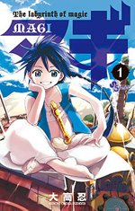
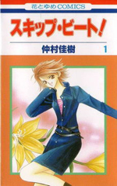

| Name | Cover | Description |
| Fairy Tail | Fairy Tail is a Mage Guild located in the town Magnolia, in the Kingdom of Fiore. Lucy Heartfilia wishes to become a member of this mage guild. One day by coincidence, she meets Natsu Dragneel and his pet Happy who turned out to be members of Fairy Tail. Be prepared for an action-packed adventure. | |
| Naruto | Before Naruto's birth, the Nine-Tailed demon fox attacked the Hidden Leaf Village. The leader of the village at the time sealed the demon in Naruto which causes him to grow up being detested by everyone in the village. Naruto has a dream of becoming the leader of the village. | |
| One Piece | Monkey D.Luffy is a happy-go-lucky kind of pirate who's only reason of becoming a pirate is to find the great treasure One Piece. Luffy and his crew travel across the Grand Line, in search of One Piece while experiencing crazy adventure. | |
| Bleach | Ichigo Kurosaki has always been able to see ghosts. After an encounter with Rukia Kuchiki, a Soul Reaper and member of Soul Society, Rukia lends some of her power to Ichigo so that he can fight a Hollow. After that incident, Ichigo finds out that he has to protect everyone from the Hollows and help the spirits find peace. | |
| Shingeki no Kyojin (Attack on Titans) | Several hundred years ago, Titans nearly exterminate humans. The humans who survived, walled themselves up with a wall that is bigger than the Titans. Eren and Mikasa witness something horrific as the city walls are destroyed by a colossal Titan and watch a Titan eat their mother alive. Eren vows to take revenge on the Titans. | |
| Beelzebub | Oga Tatsumi is a first year at Ishiyama High which is a school for delinquents. One day while sleeping near the river, he sees a man floating in the river. When he saves the man's life, the man split in half to reveal a baby boy. The baby is the son of the demon king and Oga has been chosen to raise it with the baby's maid Hilda. | |
| Kami nomi zo Shiru Sekai (The World Only God Knows) | Katsuragi Keima is known as Otamegane in real life while he is the god of getting girls on the net. One day, a devil from hell name Elsie approached him to help her capture a runaway spirit that hides only in the hearts of girls and the only way to capture the spirit is to fill the gap in their hearts with love and forcing it out. If he fails, he will lose his head. | |
| Girls of the Wild's | Wild's High is known as an all-girl private high school. The girls train daily in some form of martial arts to participate in the school's most popular event, The Wild's League. This year, Wild's High has changed into a co-ed school. Only one male, Song Jae Gu, applied and was accepted into the school. His life was soon flipped upside down and he has to learn to stand up for himself. | |
| Kingdom | It is the period of the 500 year war known as the Era of Warring States. This story is about a young boy who grew into a great general and all the trials and bloodshed that led him to being the greatest general. | |
| Shokugeki no Souma(Souma's Food Wars) | Yukihira Souma's dream of defeating his father at cooking and being the greatest chef. But as he graduates middle school, his father closes down the restaurant and goes away to cook in Europe while Souma was dared by his father to graduate from an elite culinary school where only 10% graduate. | |
| Magi |  | Aladdin is a boy who has set out to explore the world after being trapped in a room for most of his life. He has a flute with a genie in it name Ugo. Aladdin later turns out to be a Magi who chooses Kings who battles those who want to destroy fate. |
| Skip Beat! |  | Kyoko Mogami went to Tokyo to follow her boyfriend Sho to support him as he tries to be an idol. But soon, he breaks up with her because he is famous. For revenge, she tries to beat Sho in the industry. |
| Nurarihyon no Mago (Nura: Rise of the Yokai Clan) | Rikuo Nura is 3/4 human and 1/4 youkai. His house is full of spirits alongside his grandfather who is the leader of the youkai. Rikuo is meant to take over his grandfather's position but he is not interested. This shows the struggle of how Rikuo would live with both his human and youkai life. | |
| The God of High School | A mysterious organization sending out invitations to participate in a tournament where all the skilled fighters in the world are to fight against each other. The winner will be known as "The God Of High School". | |
| Noblesse | Rai had been sleeping for 820 years and has no knowledge of mankind's advancement and scientific progress. Frankenstien is his loyal servant who is the pricipal of South Korean High School. Rai decided to join the school because he thinks it is the best way for him to learn about this era. But soon after, he finds out that this era was no different than the last. | |
| Freezing | Set in a futuristic world where aliens called the Nova has invaded Earth, Kazuya Aoi enrolls for training at a school for GM girls called Pandoras who battle aliens and he becomes a Limiter. The Limiters could use a power called freezing to limit their opponent's mobility. Kazuya Aoi ends up being the Limiter of the strongest Pandora. | |
| Nisekoi (False Love) | Raku Ichijo made a secret promise with his childhood sweetheart and kept a pendant as a memento while his love kept the keys. Years later he was forced into a relationship with Chitoge Kirisaki who turned out had a key. Plus two other girls turned out to own keys as well. | |
| Ao no Exorcist (Blue Exorcist) | The world where human's live is called Assiah while the demon world is called Gehenna. Contacting and travelling between the two world is impossible. However, demons can possess a human and cross over into the human world. Rin is the offspring of Satan and a human woman and he was created so that Satan can use his body to take over the human world. | |
| Toriko | In a world where food is extremely important, Toriko, a man with superhuman skills is hired by restaurants and the rich as a hunter of precious foods. Toriko travels to capture great animals he needs to create the ultimate dinner course. | |
| Suzumiya Haruhi no Yuuutsu(Melancholy of Suzumiya Haruhi) | Kyon is a high schooler who has given up on the supernatural. After meeting with Haruhi Suzumiya he finds out that she loves the supernatural. Inspired by Kyon, Haruhi formed a club call SOS Brigade that specialize in the supernatural. The story follows the crazy adventure they endure under Haruhi leadership. | |
| Sekirei | Sekirei are 108 beautiful ladies with unknown origin who teams up with their Ashikabi, their human partners, to battle each other to determine who is the best and claim the "prize". Sasashi Minato was returning home one day and Musubi falls onto him. After that encouter he found himself being an Ashikabi and this is just the start of his new crazy life. | |
| Highschool of the Dead | " | A lethal disease is on the loose around the world, resulting in a huge death rate of humanity and an increase in the numbers of the living dead. Several high school students and a school nurse have teamed up to escape Fujimi High School after the school was attacked by zombies. The group only goal is to survive and figure out how this plague started. |
| Btooom! | Sakamoto Ryuuta is a 22 year old man who lives with his mother and the only good thing about him is that he is one of the top player in a combat game called BTOOOM. One day, he woke up in a tropical island with no memory of how and why he was there. While wandering he was attacked by a stranger. He realized that his life was in danger and that he was trapped in a real life version of BTOOOM. | |
| Kimi ni Todoke (From me to you) | Kuronuma Sawako is misunderstood by her classmates. Her timid and sweet behavior is mistaken for malicious behavior. This is because she resembles the ghost from "The Ring". Longing to make friends and a normal life, she was attracted to Kazehaya Shouta, the most popular guy in class. When Kazehaya starts to talk to her, she is hopeful that there's a chance for friendship that she has always longed for. | |
| Seikoku no Dragonar (Dragonar Academy) | Ansarican dragon knight academy is for people who had made contract with dragons and teaches students how to raise them. Ash Blake has a particular Seikokuon, proof of being a contractor, on his hand but he didn't have any dragons. After an incident his dragon finally hatches. However, the dragon wasn't born in dragon form but in a girl form. |
©2014 Wan Ahmad Akil Ashraf. Resources